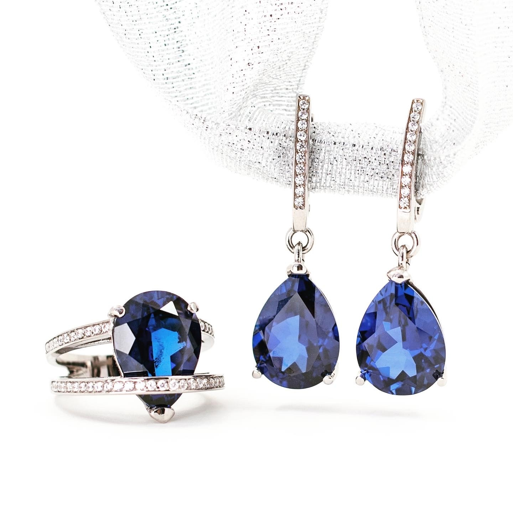

Дизайн украшений
Обсуждение формы, материалов и деталей будущего изделия.
Ювелирная студия · Ростов-на-Дону
Дизайн украшений, ремонт и гравировка. А здесь можно рассмотреть кольцо крупным планом, выбрать металл и камень и подготовить идею для разговора с мастером.
Услуги студии
Каждая задача начинается с разговора и осмотра изделия. Мастер подскажет возможное решение, материалы и следующие шаги.
Обсуждение формы, материалов и деталей будущего изделия.
Воплощение согласованной идеи в украшении с вашим характером.
Восстановление цепочек, серёг и других изделий после осмотра.
Возвращение блеска и аккуратного вида любимым вещам.
Дата, имя или личная надпись — детали согласовываются с мастером.
Рекомендации по ношению и хранению украшений после работы.

Как начать
Можно принести украшение в студию или начать с фотографии в Telegram. Мастер уточнит детали и скажет, что возможно сделать.
Новое изделие, ремонт, чистка или гравировка.
Материалы, детали, стоимость и сроки после оценки мастера.
Готовое изделие и советы по дальнейшему уходу.
Отзывы на 2ГИС
«Очень классная мастерская. Спасибо большое за оперативность по починке серебра. Очень вежливый и аккуратный персонал»
«Мастер Зорик великолепно решил проблему поломанной цепочки, а серьги как новые блестят. Работа была проведена очень качественная»
Перед обращением
Да, в отзывах клиенты упоминают ремонт серебра, цепочек и серёг. Возможность и способ восстановления конкретного изделия мастер определит после осмотра.
Гравировка указана в услугах студии на 2ГИС. Текст, место и возможность нанесения на конкретное изделие согласуйте с мастером.
Напишите в Telegram или позвоните. Пришлите референсы и опишите, что вам нравится. Если есть старое изделие, которое нужно оценить, приложите несколько чётких фотографий.
Ювелирная студия на Ленина
Напишите мастеру в Telegram или позвоните. Для оценки ремонта приложите фотографию изделия крупным планом.